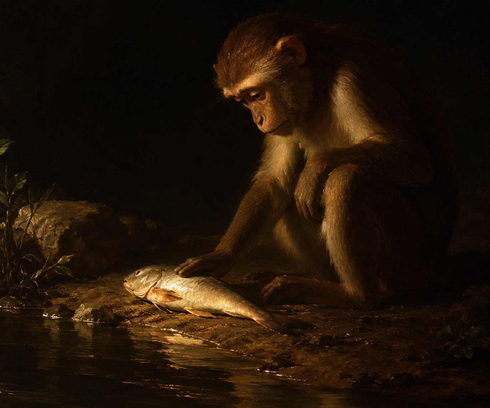

FR | EN
Le singe et le poisson

Un singe avait soif.
Il s’approcha d’un petit cours d’eau.
Il y vit un poisson.
— Malheureux ! Il est en train de se noyer !
Il se pencha et réussit à l’attraper.
Il le déposa sur la berge.
Le poisson se mit à bondir dans tous les sens.
— Comme il est heureux ! pensa le singe.
Puis le poisson ne bougea plus.
Le singe le toucha doucement,
puis le regarda tristement.
— Si j’étais arrivé plus tôt, j’aurais pu le sauver.
Conte africain
Librement adapté par Frodric
À propos de ce conte
Ce conte africain existe sous différentes versions.
Il est pour moi l’archétype du conte.
J’ai choisi de le réduire à sa forme la plus simple.
Échos
Cette histoire vous en a-t-elle rappelé une autre ? Vous pouvez me la raconter ici.